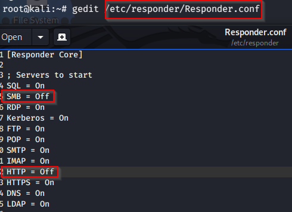

now that we have targets.txt file let's start the attack
firstly we need to do some configurations on responder and then fire it up.

now we can fire responder up

it should look like this. we are listening for events now.
let's fire ntlmrelax.py up for smb relay part.

let's go to the frank castle machine and trigger llmnr by writing wrong host.

now that we've triggered. let's look at ntlmxrelay

as we can see we got connecttion from fcastle machine and attacked peterparker machine(192.168.131.138) and we succeeded and we dumped hashes. Why do we succed on peterparker machine remember because frankcastle is a local admin on both machines. Now we can try to crack them and we can pass around these hashes.
This is very common occurences especially if the environment has a lot of local admins and you have a lot of local admins on the same machine.